[...A former battery factory reimagined as a living ecological landscape, where education, exploration, and environmental awareness become catalysts for reconnecting people with nature...]
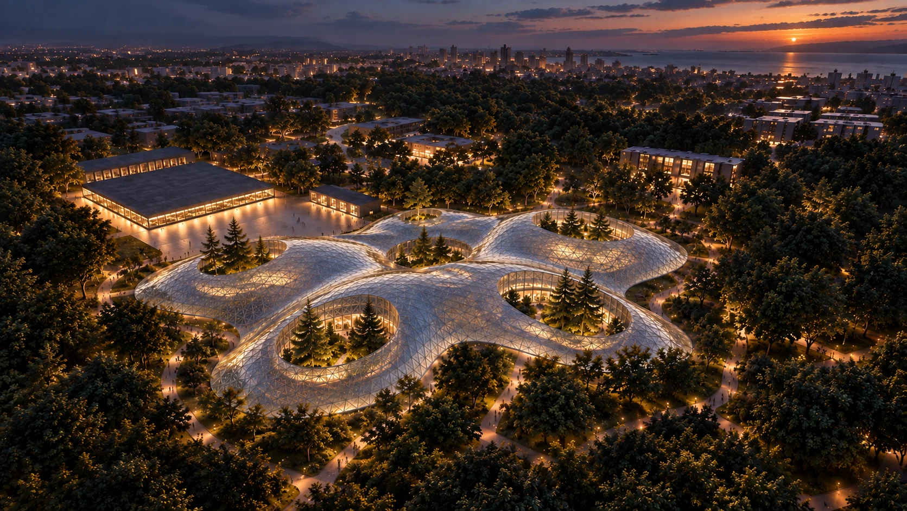
A Change–A Chance transforms a former battery factory in Antalya into a public landscape centered on nature, education, and social interaction. Developed as a group masterplan, the proposal reimagines the industrial site as a botanical-based social innovation center where research, exploration, and collective learning come together.
By introducing ecological systems, educational programs, and shared public spaces, the project creates a new relationship between the site and the city while allowing knowledge and activity to extend beyond its boundaries.
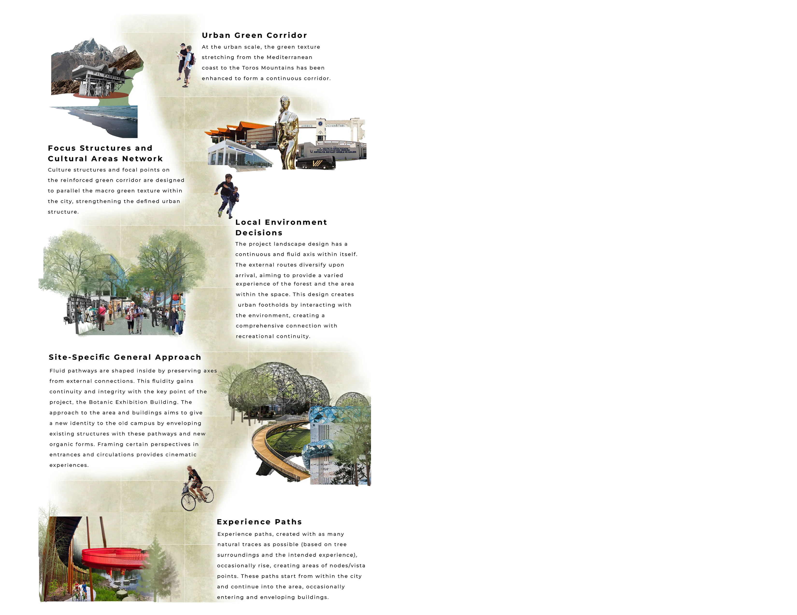
Refunctioned Buildings
(Former Factory Campus)
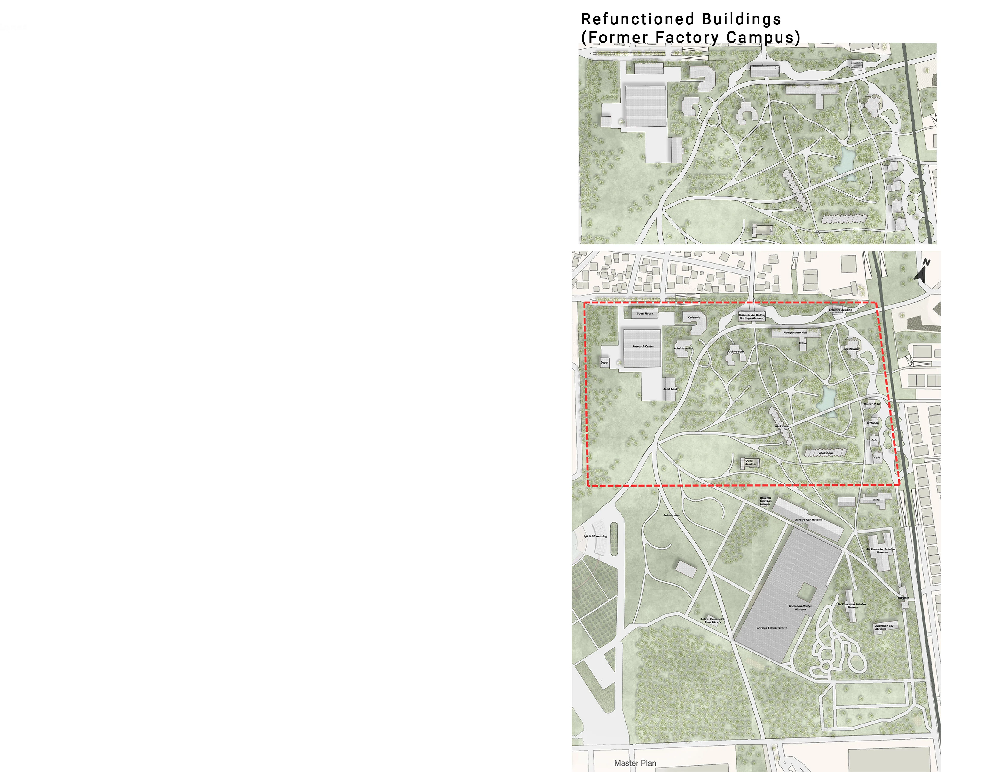
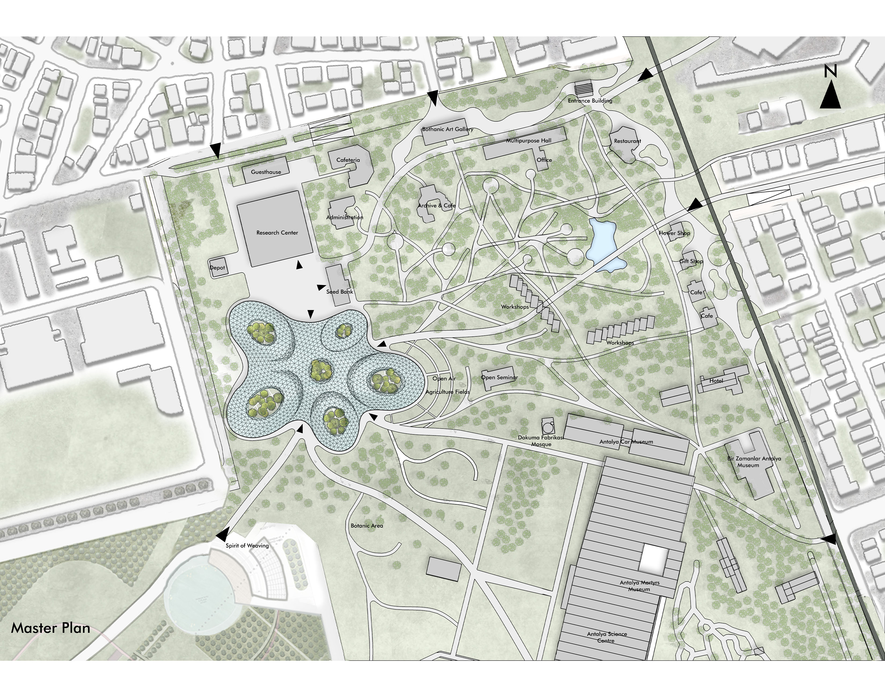
The individual proposal develops a biozone designed to immerse visitors within diverse plant environments and ecological systems. Through direct interaction with nature, the space encourages exploration, observation, and a deeper understanding of biodiversity.
Rather than presenting ecology as something to be observed from a distance, the biozone creates an experiential learning environment where visitors move through different natural conditions and encounter the relationships between species, habitat, and space. Through education and hands-on experience, the design aims to strengthen ecological awareness and encourage a more lasting connection between people and the natural environment.
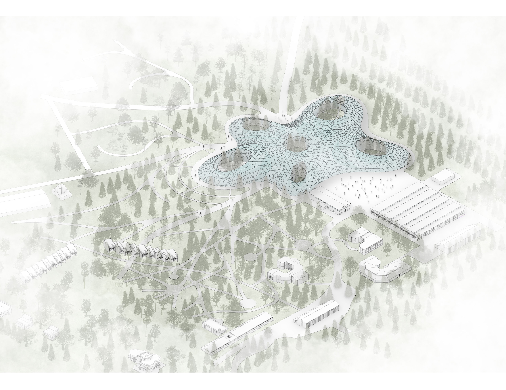
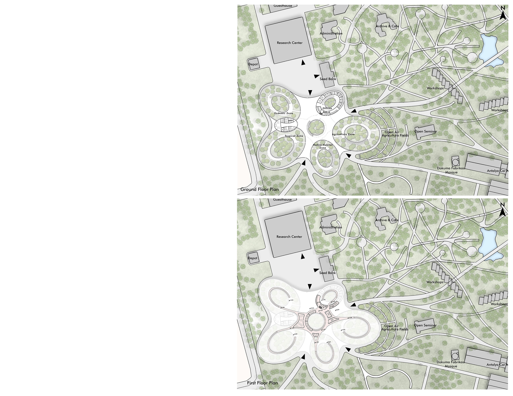
Form
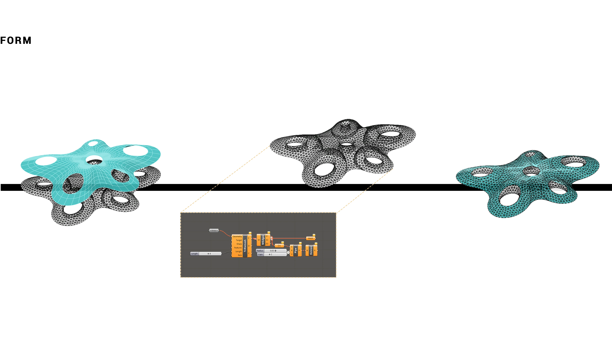
The biozone draws from the fluidity and growth patterns of natural forms. Elliptical geometries shape an organic spatial system that contrasts with the more rigid orthogonal character of the surrounding site.
A triangulated steel structure supports large spans and open interior spaces, while a glazed envelope maximizes daylight throughout the building. Beyond shaping the architectural atmosphere, natural light becomes an essential environmental condition for supporting the plant life housed within the biozone.
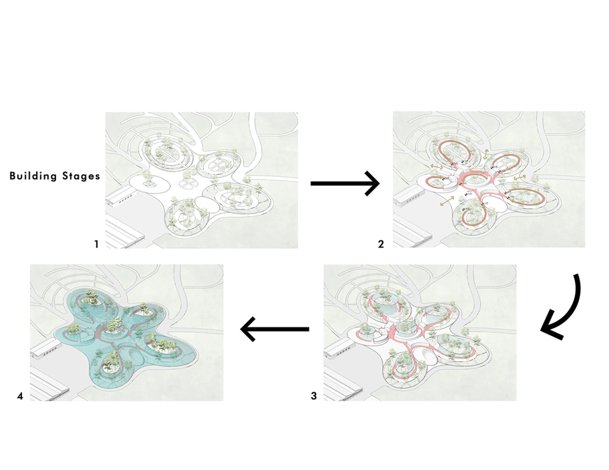
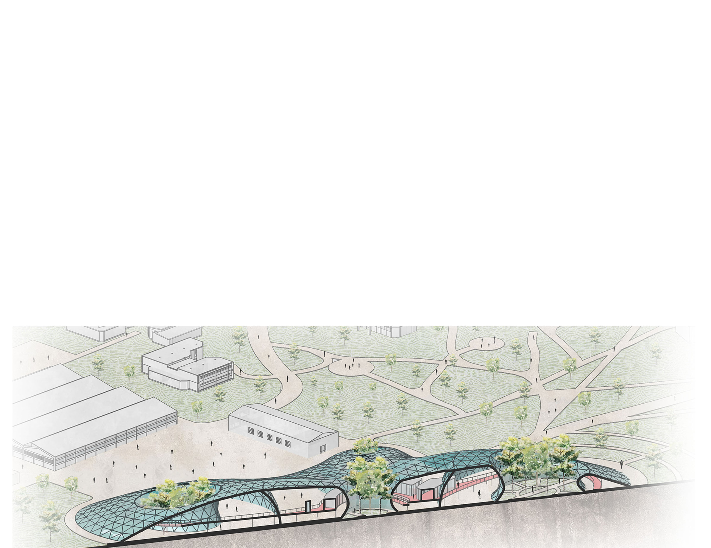

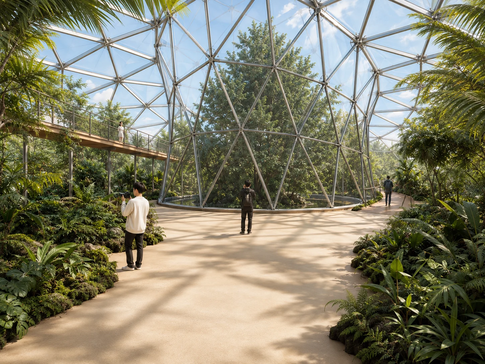
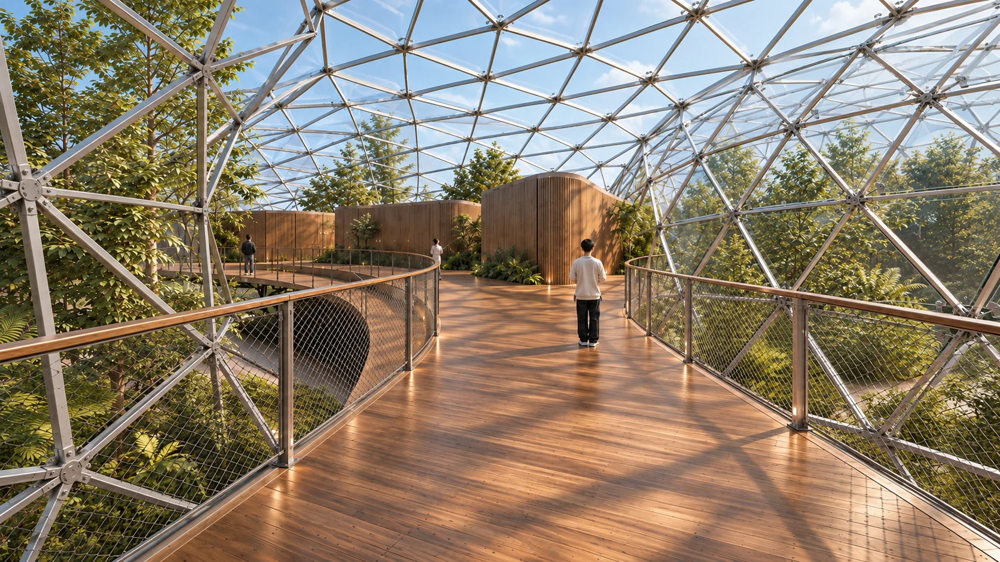
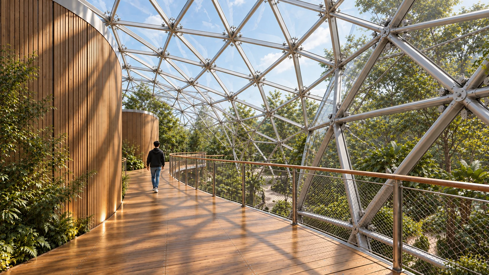
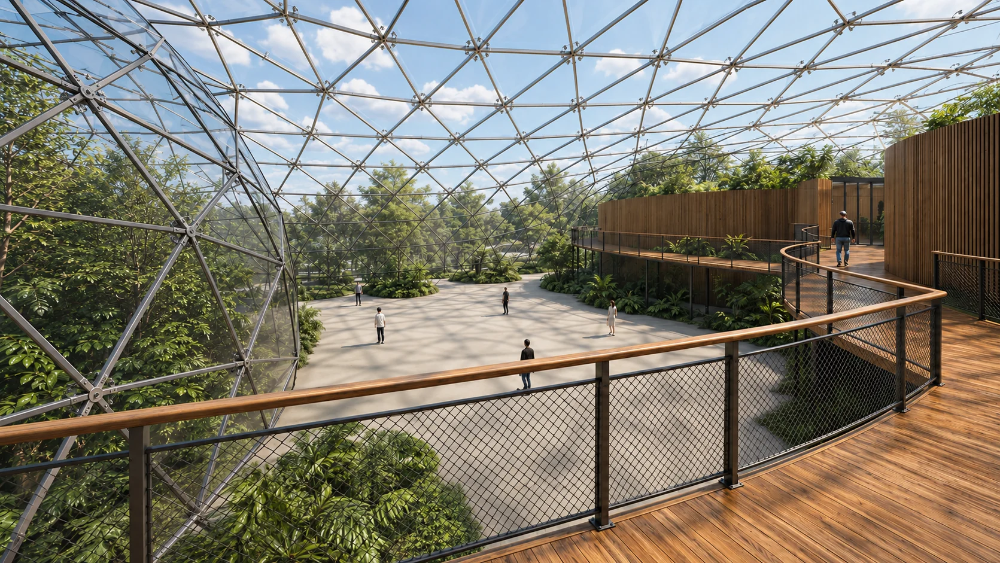
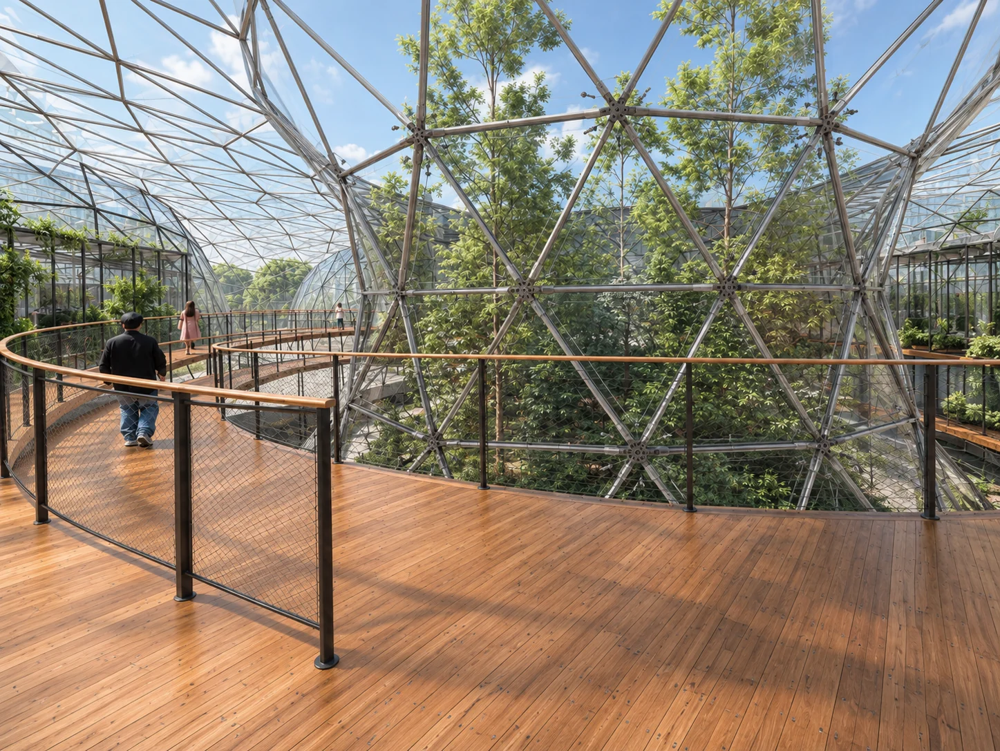